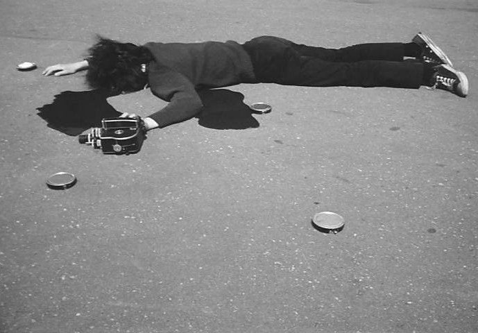
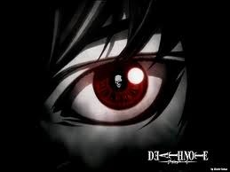
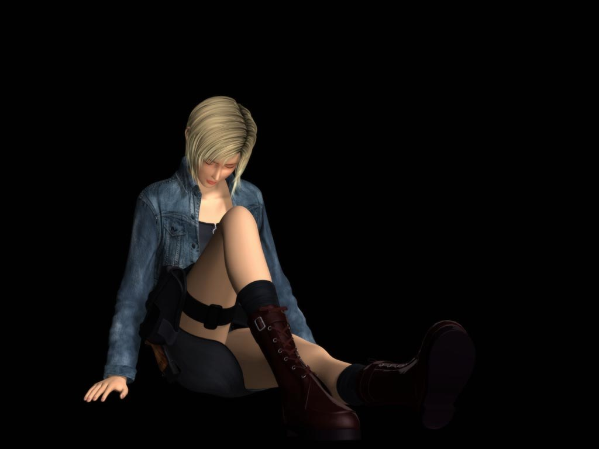

WEEK 1 FILM AS RECORDER
January 7, 2013
SCREENING: FUTAGAWA BUNTARŌ, BACKWARD FLOW (1924) 21 MIN
EARLY ANIME OFUJI Noburo / MURATA Yasuji shorts
January 9, 2013
LECTURE: INTRO TO J- FILM
Keywords: BENSHI, ONNAGATA, CHAMBARA
READ:
Keiko MCDONALD, “INTRODUCTION”
YALE FILM TERMS, “Part 1: Basic Terms,” and “Part 2: Mis En Scene”
January 11, 2013
DISCUSSION:
Yale Film Terms, “Part 3:cinematography”
WEEK 2 FILM AS PROVOCATEUR
January 14, 2013
MIZOGUCHI Kenji, TOKYO MARCH (1929) WATER MAGICIAN (1933) PN1995.9.J34T26 2007 DVD V.1
January 16, 2013
LECTURE: What film Can do
Clips from KINUGASA Teinosuke, PAGE OF MADNESS (1926)
READ:
TANIZAKI Junichiro, “MISCELLANEOUS OBSERVATIONS ON CINEMA”
EDOGAWA Ranpo, “HORRORS OF FILM,” “DAYDREAM”
YALE FILM TERMS, “Part 4: Editing” “Part 6: Analysis”
January 18, 2013
DISCUSSION:
WATCH one of the following:
OSAKA ELEGY, SISTERS OF THE GION, WOMEN OF THE NIGHT, STREET OF SHAME (HULU or in the MEDIA CENTER)
EXPERIMENT ONE DUE
WEEK 3THE QUESTION OF FAMILY FILM
January 21, 2013 NO CLASSES MLK
January 23, 2013
WATCH one of the following:
ANY OZU Yasujiro film (see http://www.hulu.com/playlist/189463 or look in the MEDIA CENTER)
KOREEDA Hirokazu, STILL WALKING, 2008 (114MIN) PN1995.9.J34A739 2011
ITAMI Juzo, FUNERAL
January 25, 2013
READ:
Corrigan, “Writing about the movies”(SGWF)
THESIS STATEMENT ASSIGNMENT
YOSHIDA Yoshishige, OZU’S ANTI-CINEMA SELECTION
FINAL DAY TO SIGN UP FOR GROUPS
FISSION — RECORDING DISASTER, DOCUMENTING CATASTROPHE, IMAGING and IMAGINING THE END OF THE WORLD
WEEK 4 MAJOR ASSIGNMENT ONE -- PAPER ONE
January 28, 2013
KUROSAWA AKIRA, I LIVE IN FEAR,1955 (103 MIN.) PN1997.L5955 2009 DVD
January 30, 2013
EXPERIMENTAL FILM — LECTURE
READ
Corrigan, “Beginning to think, preparing to watch, and starting to write”
February 1, 2013
EXPERIMENT TWO DUE
WEEK 5 DOCUMENTING DISASTER
February 4, 2013
SOMA HONKA
SPECIAL GUEST***
February 6, 2013 ****
FILM TERMS QUIZ
February 8, 2013
Watch
Nuclear Watch Fukushima Update http://www3.nhk.or.jp/nhkworld/english/movie/feature201202232000.html
WEEK 6 ENDS OF THE WORLD AND NEW BEGINNINGS
February 11, 2013
GOJIRA/SING A SONG OF SEX
February 13, 2013
CLIPS from DIARY OF SHINJUKU THIEF
Read
“Oshima Revisited”
Corrigan, “Film Terms and topics for Film analysis”
February 15, 2013
EXPERIMENT THREE DUE
FUSION — IMAGINING CONTAGION, CONNECTIVITY, and CIRCULATION
WEEK 7 CONTAGION
February 18, 2013
PARASITE EVE
February 20, 2013
READ
“Visual Aesthetics and Ways of Seeing”
Corrigan, “six approaches to writing about Film”
February 22, 2013
WEEK 8 CONNECTIVITY
February 25, 2013
KAIRO
February 27, 2013
March 1, 2013
Experiment 4 Due
MID-TERM HAND OUT
March 4, 2013 SPRING BREAK
March 6, 2013 SPRING BREAK
March 8, 2013 SPRING BREAK
WEEK 9 CIRCULATION
March 11, 2013
Lily chou chou
SUBMIT MID-TERM
March 13, 2013
READ
MIYADAI, “Transformation of Semantics in the History of Japanese Subcultures since 1992”
March 15, 2013
THESIS STATEMENT
WEEK 10 ENDS OF THE WORLD AND SEKAI KEI
March 18, 2013
DEATH NOTE
Please all go to W214: video viewing room on the second floor of Pattee library. The film showing will still be at the same time 6pm.
March 20, 2013
READ
DEATHNOTE
CLIPS from A1
March 22, 2013
WEEK 11 SUPERFLAT
March 25, 2013
SUMMER WARS
March 27, 2013
Read
“SUPERFLAT MANIFESTO”
March 29, 2013
WEEK 12 ALTERNATE AND FUTURE REALITIES
Paper ROUGH Draft
April 1, 2013
GIRL WHO LEAPT THROUGH TIME
April 5, 2013
Read
GIRL WHO LEAPT THROUGH TIME
April 7, 2013
****Library Research day*****
WEEK 13
April 8, 2013
PAPRIKA
April 10, 2013
“Lucid Dreams, False Awakenings”
“Psychoanalytic Cyberpunk Midsummer-Night's Dreamtime”
April 12, 2013
NARRATIVE TO THE RESCUE
WEEK 14 Out of Joint
April 15, 2013
RASHOMON
April 17, 2013
April 19, 2013
WEEK 15 ASync
April 22, 2013
SURVIVE STYLE 5
April 24, 2013
April 26, 2013
MONDAY APRIL 29th
FINAL PAPER DUE








The syllabus is in flux. Check here for most recent updates. Any printout is likely already out of date.
Updated Thursday, January 8, 2015
Slides are posted on the course website as links to the schedule page from the date of the lecture. Slides are usually uploaded within two weeks of the lectures. Sometimes you will have to hit refresh on your browser to see the slides.
You are absent without this!!!!

Schedule